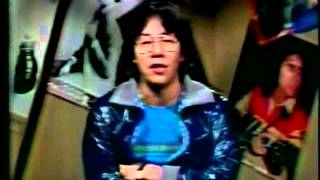
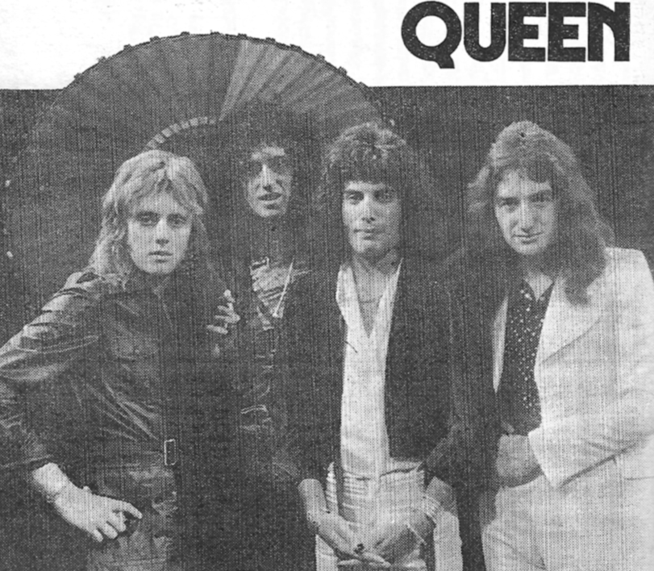
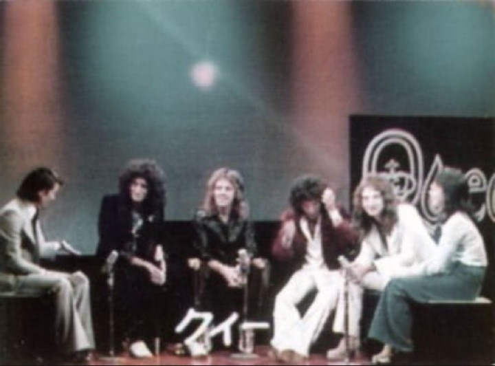
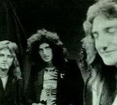
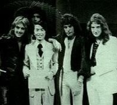
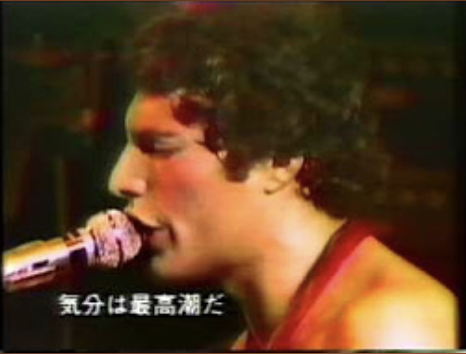

Pops in Picture ("P.I.P.") was the name of a music program that was broadcast in the Kyoto area on KBS (Kinki Broadcast Station) from 1973 - 1980. It was hosted by Hisashi Kawamura (affectionately known as "Dede"), who was occasionally joined by Rock Magazine editor-in-chief Agi Yuzuru, whose schtick was that he had always just returned from scouting the music scene in London "yesterday". Information on Queen's appearances on this program are anecdotal and difficult to find, but it seems that this show was most likely the first to introduce them to a Japanese television audience sometime in the first half of 1974. Reportedly, an EMI exec appeared on the show to introduce Queen I, retitled Princess of Terror for Japanese audiences, and played a promo video clip of Liar (which version is unclear).

A notice in Queen Express no. 7 (one of the newsletters of the short-lived first Japanese Queen Fan Club) mentions a screening of Queen on Pops on May 15th, 1975, with "new footage", possibly from their recent 1975 Japanese tour, as the May 1st gig was reportedly filmed and at least partially shown on Japanese TV. Since home VCRs were still rare at this point, even in tech-forward Japan, music TV footage was often copied over for film screenings held for fan groups around the country. Kids would also hold up home audio cassette recorders to their TV sets to record broadcast audio—a want ad in issue 3 of the Official Japanese Fan Club magazine lists an audio cassette of Pops amongst their list of coveted items.
I don't believe Pops in Picture ever had artists live in the studio, but it seems very likely that Queen was featured several times throughout the rest of the 70s and 1980. As KBS has been reorganized and restructured several times since then, it seems unlikely that any video footage survives, but the aforementioned film copies may still be out there somewhere. As it is, the Internet doesn't turn up much footage at all, but there a lot of fond memories of this program.
Star Sen

スター千一夜, SUTAA sen'ichi ya, or Star Sen for short ("1001 Nights of Stars"), was a TV program that aired on Fuji TV from 1959 to 1981. Queen recorded an appearance on April 20th, 1975, and the show was broadcast on April 28th. There are many anecdotes of young fans recording the audio of the interview live off the TV onto cassette tapes in order to relive the magic later. One of these recordings has made its way to youtube, but no video footage has surfaced yet online. Japanese fans have reportedly reached out to Fuji TV over the years to inquire about this footage and have been informed that the tapes were wiped or disposed of long ago, effectively making this appearance lost media. However, the second issue of the Official Japanese Fan Club Magazine, released in early 1976, explicitly notes that this video footage was transferred to film in order to be screened at fan club get-togethers, which means there's a chance this footage may still exist somewhere in film form. (I believe the Japanese Division of the fan club was rolled over into the UK-based Fan Club after Freddie's death in 1991, and I don't know what became of their archives.). Until then, only a few blurry and monochrome images can be found: photos taken of live TV screens at home by fans, a few of which were printed in a fan club magazine in 1979, as well as some grainy black and white photos from the set printed in an issue of Ongaku Senka in 1975.



Wakai Kodama
Wakai Kodama, or "Young Echo", was a music request program that aired on NHK Radio 1 from 1970 to 1978. Queen made two appearances on this show—one on April 25th, 1975, which was broadcast the following evening, and another during their 1976 tour. Like Star Sen, these appearances were recorded by Japanese fans onto cassette tapes, and snippets of these can be found on youtube.. I've read anecdotes that these interviews were not captured in full due to the radio show being longer than the cassette tapes of the time; I'm not sure if that's true or not. Both Wakai Kodama appearances and the afore-mentioned Star Sen interview appear on an Uxbridge bootleg compilation of Queen interviews from 1975 and 1976, but no running times are listed.
NHK Young Music Show
Young Music Show was a Western music showcase that aired irregularly on NHK from 1971 to 1986. Queen was the feature at least twice: August 19th 1981 and June 1st 1985.
The NHK archives lists the 1981 program playlist as follows:
Now I'm here
Another One Bites the Dust
You're My Best Friend
The Flash Theme
Let Me Entertain You
Don't Stop Me Now
Killer Queen
Crazy Little Thing Called Love
Sheer Heart Attack
Save Me
others

The full 1981 broadcast was listed on youtube at some point but was taken down due to copyright issues. The screenshot that appeared with it looks like it was taken from the 12/26/79 "Concert for Kampuchea" footage of Don't Stop Me Now, but as other songs on the playlist were released after 1979, it's safe to say that not all the footage shown came from this date.
The 1985 broadcast reportedly showed most of the band's May 11th 1985 concert at Yoyogi National Stadium. The NHK archives lists the 1985 playlist as follows:
Tear It Up
Tie Your Mother Down
Under Pressure
Seven Seas of Rhye
Keep Yourself Alive
Liar
others
1979 Live in Japan
Queen's 1979 tour of Japan was notably rough due to the condition of Freddie's voice, which deteriorated after he came down with a cold. However, due to extraordinary demand, an extra night in Tokyo was added and it was this final show at the Budoukan on April 25th, 1979 that was recorded for TV. (It is sometimes erroneously documented as the 24th.) A fan recollection from 1992 notes Freddie's condition, the fact that he took a tumble, and that the TV cameras mercifully didn't capture this moment. According to a flyer linked on Queenlive.ca, footage of this show was broadcast on Japanese TV a couple of times in 1982. However, based on the fan report, I believe it was broadcast earlier than that as well, probably not long after the actual concert in 1979. An in-depth concert report that was printed in Japanese Fan Club Magazine Vol. 14 seems to support this. This footage has made its way to bootlegged Japanese VHS tapes and ultimately youtube.


{kind=link}